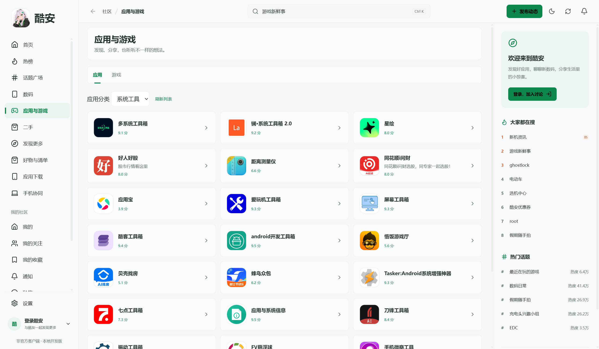

浏览社区内容
首页栏目、头条、热榜、动态和评论，支持按兴趣浏览。
查看社区界面第三方酷安 Windows 客户端
浏览社区动态、数码内容和应用信息。需要操作手机时，可通过 USB 连接继续。
最新正式发行版 · Windows x64 · 非官方第三方客户端
更宽的视野，看内容，也看生活。
社区浏览、应用发现与手机协同，
集中在一个 Windows 窗口中。
首页栏目、头条、热榜、动态和评论，支持按兴趣浏览。
查看社区界面查看介绍、截图、评分与版本信息；管理已下载的安装包。
查看应用界面顶部搜索、发布动态、滚动加载和独立图片查看，也支持常用快捷键。
客户端仍在开发中，手机客户端的完整复刻尚未完成。查看功能完整性记录

应用与游戏选择一种材质，
查看界面变化。
此处为网页预览，实际效果以客户端显示为准。
连接并授权 Android 手机后，可以在协同窗口中操作设备、安装应用和查看更新。
手机账号与桌面账号分别登录。手机锁屏时，需先在手机上解锁。
登录、功能范围、手机协同与更新。
不是。coolapk desktop 由第三方独立开发和维护，与酷安官方无隶属关系，未获得酷安官方认可或背书。本网站是这个第三方桌面项目的主页。
尚未完成。部分社区、账号和媒体功能仍在逐项核对；Android 安装、系统权限及其他设备专属操作通过手机协同完成。入口和模拟测试不代表全部真实账号流程已完成验收。
在客户端打开酷安官方登录窗口，由你亲自登录。公开内容按官方权限访问；如果官方服务要求安全验证，需要本人在验证码窗口完成。手机登录不会自动登录桌面客户端。
进入“设置 → 界面显示”，选择液态玻璃、背景模糊或半透明，再选择自定义背景并调整不透明度。可以同时调整主题、字号与夜间模式；高对比度模式优先使用纯色界面。
进入“设置 → 关于酷安 → 检查软件更新”，确认下载后再安装。也可以从 GitHub 发布页面手动下载安装包；手机应用的更新则在“手机协同”中处理。
在 GitHub Issues 提供版本号、复现步骤与必要截图。不要提交密码、Cookie、验证码或其他凭据。酷安账号与官方服务的问题请通过酷安官方帮助处理。
coolapk desktop 不是酷安官方产品，由第三方独立开发和维护，不代表酷安官方，未获得酷安官方认可或背书。酷安名称、标识和相关商标归相应权利人所有，社区内容与图片的权利归原作者或相应权利人所有。
客户端依赖酷安官方服务，功能与访问可能随服务调整而变化。本网站提供项目介绍及公开下载链接，不收集酷安账号密码、验证码或 Cookie。